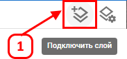
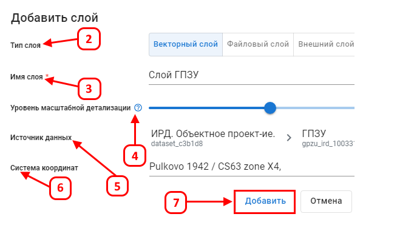
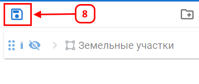

Подключение слоя
Подключение слоя позволяет добавить геоданные в проект для дальнейшего анализа и визуализации.
Для подключения слоя выполните следующие шаги:
- Нажмите на кнопку Подключить слой (1), расположенную в верхней части панели инструментов карты.

- В открывшемся окне выберите тип слоя (2):
- Векторный слой — геоданные в виде векторных объектов.
- Файловый слой — геоданные, загруженные в библиотеку документов.
- Внешний слой — геоданные, подключаемые через веб-сервисы, такие как ArcGIS.

- Введите имя (3) с которым слой будет отображаться в проекте.
- Настройте уровень масштабной детализации(4), передвигая ползунок. Этот параметр определяет, при каком увеличении карты слой будет отображаться.
- Выберите источник данных(5) из доступных наборов данных.
- Выберите систему координат(6) установленную по умолчанию или добавьте новую.
- Нажмите Добавить (7), чтобы подключить слой в проект, или Отмена для отмены операции.
- Сохраните слой в проекте (8).

Теперь слой добавлен в проект и доступен для работы.